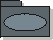

Guidelines:
Use-Case Package

Use-Case Package |
A
use-case package is a collection of use cases, actors, relationships,
diagrams, and other packages; it is used to structure the use-case model by
dividing it into smaller parts. |
Topics
A model structured into smaller units is easier to understand. It is easier
to show relationships among the model's main parts if you can express them in
terms of packages. A package is either the top-level package of the model, or
stereotyped as a use-case package. You can also let the customer decide
how to structure the main parts of the model.
- If there are many use cases or actors, you can use use-case packages to
further structure the use-case model. A use-case package contains a number
of actors, use cases, their relationships, and other packages; thus, you can
have multiple levels of use-case packages (packages within packages).
- The top-level package contains all top-level use-case packages, all
top-level actors, and all top-level use cases.
You can partition a use-case model into use-case packages for many reasons:
- You can use use-case packages to reflect order, configuration, or delivery
units in the finished system.
- Allocation of resources and the competence of different development teams
may require that the project be divided among different groups at different
sites. Some use-case packages are suitable for a group, and some for one
person, which makes packages a naturally efficient way to proceed with
development. You must be sure, however, to define distinct responsibilities
for each package so that development can be performed in parallel.
- You can use use-case packages to structure the use-case model in a way
that reflects the user types. Many change requirements originate from users.
Use-case packages ensure that changes from a particular user type will
affect only the parts of the system that correspond to that user type.
- In some applications, certain information should be accessible to only a
few people. Use-case packages let you preserve secrecy in areas where it is
needed.
Copyright
© 1987 - 2001 Rational Software Corporation
| |

|
 Artifacts >
Artifacts >
 Requirements Artifact Set >
Requirements Artifact Set >
 Use-Case Model... >
Use-Case Model... >
 Guidelines
Guidelines